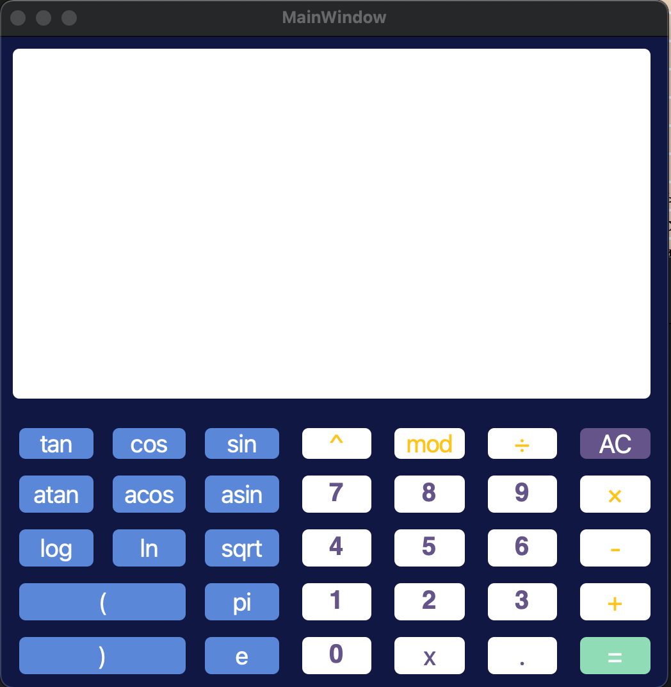
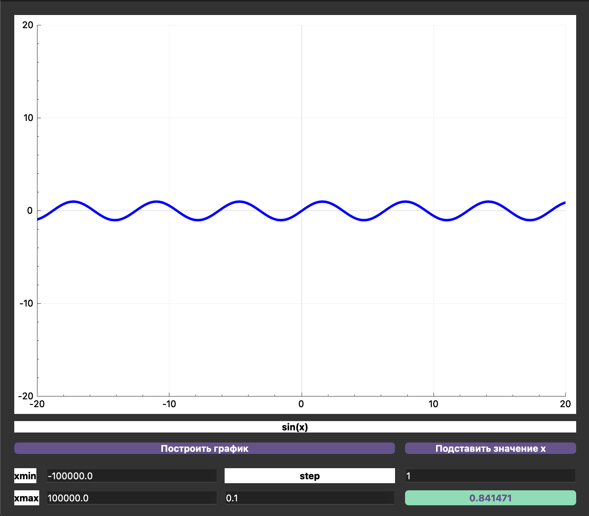

Графический интерфейс приложения. При вводе переменной x в новом окне появится график данной функции
 При построении графика появляются дополнительные поля
| Название оператора | Пример |
|---|---|
| Скобки | (a + b) |
| Сложение | a + b |
| Вычитание | a - b |
| Возведение в степень | a ^ b |
| Остаток от деления | a mod b |
| Унарный плюс | +a |
| Унарный минус | -a |
| Описание функции | Функция |
|---|---|
| Вычисляет косинус | cos(x) |
| Вычисляет синус | sin(x) |
| Вычисляет косинус | tan(x) |
| Вычисляет арккосинус | acos(x) |
| Вычисляет арксинус | asin(x) |
| Вычисляет арктангенс | atan(x) |
| Вычисляет квадратный корень | sqrt(x) |
| Вычисляет натуральный логарифм | ln(x) |
| Вычисляет десятичный логарифм | log(x) |